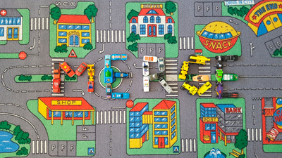

Home
|
About
|
Work
|
Contact
|
Services
Welcome
Welcome to Wahsome Designs! My name is Cindy Wah.
I am a Graphic Designer who looks forward to taking care of your design needs.
Here I take your idea and make it come to life.
Work

See My Work